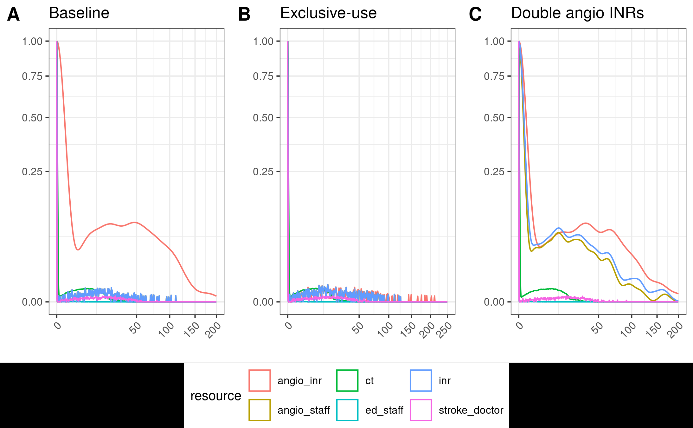

Add seeds, got in-text result 1, working on Figure 2. Total time used: 13h 10m (32.9%)
09.14-09.17, 09.22-09.24, 09.30-09.35: Continuing on in-text results 1 and 2
Re-ran twice more to see again how much variation we get between runs, and how likely that could attribute for the difference against the paper. We saw-
Output
Result 1 (Day 3)
Result 2 (Day 3)
Result 3 (Today)
Result 4 (Today)
Paper
Baseline
13.33 minutes
13.65 minutes
14.15 minutes
14.09 minutes
-
Exclusive
8.58 minutes (4.75 reduction)
9.20 minutes (4.45 reduction)
8.79 minutes (5.36 reduction)
8.05 minutes (6.04 reduction)
6 minute reduction from baseline
Two AngioINR
14.86 minutes (1.53 increase)
13.61 minutes (0.04 reduction)
14.37 minutes (0.22 increase)
14.04 minutes (0.05 reduction)
4 minute reduction from baseline
Based on this, it’s reasonable to assume that a 6 minute reduction can be observed within the variation of model runs (in-text result 1), but that the two angioINR scenario is not matching up.
Reflections
Environment used does not match up to paper - paper use Simmer version 4.1.0, and otherwise, other versions of packages and of R being used are more recent than publication. It is unlikely that differences in results are due to this (although not impossible). Note trying to revert the environment to older versions as a possible troubleshooting strategy if issues persist, but not yet, due to major challenges found in trying to do so prior.
Based on this tutorial, add seeds to the model. This is because the result was only returned by certain runs of the model and not others, so want to add seeds now so can give a seed for which the result is reproduced. I installed simEd - renv::install("simEd") and add to DESCRIPTION and renv::snapshot() - and then made the following changes to the model:
library(simEd)
Input seed to function which becomes SEED, then set.seed(SEED+i) within model replications
Sampling functions changed from r to v - i.e. rpois() to vpois(), with incremental stream numbers
I tried running baseline, but it took a long time - after 6 minutes, it was still running (which is normally how long the whole script takes). I interrupted it and it returned Error : object 'shifts' not found. However, no change has been made to shifts code. I ran a short section of code practicing sampling and this worked fine:
I then tried running it with 3 replications instead of 30 (baseline <- run_model(nsim=3, seed=100)), and that ran fine, so it appears that introducing this library just slowed down the model alot, as 3 replications could complete in 40 seconds.
I looked into changing the lapply() in model.R to a parallel version:
parLapply requires you to specify every variable to be included, plus additional lines of code to set up and close clusters
mcapply() just requires you to change lapply
Hence, I tried mcapply, but it returned Error: external pointer is not valid, which was resolved based on this post by adding wrap(). However, learnt that mclapply wouldn’t work on Windows. Moreover, it still took a fair while to run (testing with 30 replications, it’s still going at 4 minutes).
As such, removed simEd from model.R and environment and returned to rpois(), and instead just set a simple seed without controlling streams. The time for this to run was as per usual, which was fab. I ran the baseline model twice with the same seed and compared the results, and it came out looking (by eye, at the processed results) identical.
I therefore ran baseline and exclusive with three different starter seeds, and the seed 200 came out closest to the paper -
Baseline: 13.96 minutes
Exclusive: 8.12 minutes
Difference: 5.84 minutes
Hence, I feel we can mark in-text result 1 as reproduced at this time (11.14), with starter seed of 200.
import syssys.path.append('../')from timings import calculate_times# Minutes used prior to todayused_to_date =443# Times from todaytimes = [ ('09.14', '09.17'), ('09.22', '09.24'), ('09.30', '09.35'), ('09.50', '10.49'), ('11.02', '11.05'), ('11.13', '11.14')]calculate_times(used_to_date, times)
Time spent today: 73m, or 1h 13m
Total used to date: 516m, or 8h 36m
Time remaining: 1884m, or 31h 24m
Used 21.5% of 40 hours max
11.15-12.30, 13:15-13.50, 13.55-14.55: Working on Figure 2
Figure 2 uses the results from the scenarios above but creates plots where:
X axis is wait time in minutes (on a non-linear scale)
Y axis is standardised density of patients in queue, from 0 to 1 (on a non-linear scale)
i.e. “Probability density of patients who are waiting standardised to patients who are not waiting”
i.e. “To facilitate graphical and descriptive comparison across models, we express waiting times as relative probabilities of waiting a given amount of time, compared to not waiting at all. Since most patients accessed services without waiting, wait time densities could be directly compared across simulations after this normalization.”
It’s not immediately clear exactly what this means, but I’ll start with creating a density plot of waiting times for one of the resources. First though, I add some code to save the model results to CSV files so that we don’t have to re-run the model each time (since with seeds added, it should now come out the same each time anyway). I initially saved these with write.csv() but it was too slow, so then (based on this tutorial), I switched to data.table::fwrite() (“fast CSV writer”), which was much much better! Hence, used fread() to import (as should also be quicker, based on this tutorial).
I then created a basic density plot with ggplot with ED AngioINR untransformed wait times.
I played around with various transformations, as it wasn’t immediately clear to me how they had stretched the y axis, including creating custom functions, transforming the data directly, and trying out default transform options. I eventually stumbled across scale_y_continuous(transform="sqrt"), which matched up to the axis in the paper.
Standardising the density
I played around with a few different transformation as I tried to work out what they meant by standardised density of patients in queue. Whilst converting raw wait times to probabilities, I noticed a bunch of ever so slightly negative wait times, but given these are very small (i.e. 0.0000000…), I am not concerned.
One thing I tried was converting each wait time into a probability of that wait time (e.g. rounding each to 2dp, then 0 wait time = probability 0.68).
# Filter to just AngioINR for ED and round wait times to 2dp
base_angio <- res_base %>%
filter(category == "ed", resource == "angio_inr") %>%
select(wait_time)
# Round to 2dp
base_angio$wait_time <- round(base_angio$wait_time, 2)
# Convert raw wait times into probability of waiting that long given all
# wait times observed
prob_wait <- base_angio %>%
group_by(wait_time) %>%
summarise(count = n()) %>%
mutate(probability = count / sum(count)) %>%
select(wait_time, probability)
ggplot(prob_wait, aes(x=wait_time, y=probability)) + geom_line() + geom_point()
However, that really didn’t look quite right.
Figure 2A wrong transformation
Looking at the curve with the raw wait times, the shape of the curve is more similar to the paper, just with different y axis and stretched. Revisiting the paper description, it is the “relative probabilities of waiting a given amount of time, compared to not waiting at all”. So, it’s not just the relative probability of waiting a given amount of time, compared to any other time.
I created a plot where the waiting times were normalised in such a way that the values range from 0 to 1, which starts to look a bit more similar to the paper -
# Filter to just AngioINR for ED and round wait times to 2dp
base_angio <- res_base %>%
filter(category == "ed", resource == "angio_inr")
# Set negative wait times to 0
base_angio$wait_time[base_angio$wait_time < 0] <- 0
# Create the density data
density_data <- density(base_angio$wait_time)
# Normalize the density values
normalized_density <- density_data$y / max(density_data$y)
# Create a data frame with the normalized density values
density_df <- data.frame(x = density_data$x, y = normalized_density)
# Plot using ggplot2
ggplot(density_df, aes(x = x, y = y)) +
geom_line() +
scale_y_continuous(transform="sqrt")
ggsave(path_fig2a)
Figure 2A scaled to 0 to 1
I then tried creating a dataframe of counts for each wait time, then calculated probability based on number of people with no wait time. However, many were tiny (as count e.g. 1 of wait time 0.00000000000002842171). Tried it with rounding first. However, it is still then the same, as most are just 0, and then e.g. 1 wait time 0.2, 3 wait time 0.5.
# Filter to just AngioINR for ED and round wait times to 2dp
base_angio <- res_base %>%
filter(category == "ed", resource == "angio_inr")
# Set negative wait times to 0
base_angio$wait_time[base_angio$wait_time < 0] <- 0
# Round everything to 1dp
base_angio$wait_time <- round(base_angio$wait_time, 1)
# Get probability of no wait time
n_zero = length(which(base_angio$wait_time == 0))
prob_zero = n_zero / nrow(base_angio)
# Convert dataframe to counts of each wait time
wait_df = base_angio %>%
group_by(wait_time) %>%
summarise(count=n())
I tried transforming by the density of 0 (density_data$y[which.min(abs(density_data$x - 0))]) but that worked out to just be the same as max(density_data$y), since 0 has the max density.
I tried transforming the x axis, which also appears to be a sqrt transformation, although this has an issue of introducing Inf values and losing where x=0 and density=1. I explored a few different ways of doing this transformation to see if anything helps
15.10-15.30: Research into transformations
As I’m struggling with these transformations - to the x axis, and to the probability density function. As such, it seems a good idea to do a bit more research into these and what exactly they are doing, to see if that helps.
Square root axis transformation
I read a few articles and looked at the documentation for the square root transformation, and understand that this simply applying the sqrt() function.
The only difference is the x axis labels - when we use the ggplot axis transformation, it keeps the old labels to maintain interpretation of the original data.
Density functions
A probability density function is used to describe a continuous distribution. It can be used to find the likelihood of values of a continuous random variable.
ggplot::geom_density() is described as plotting a smoothed version of the histogram.
15.31-16.55: Returning to Figure 2
I add the sqrt x axis transformation to the basic density plot, and suddenly got a result that looked alot like the article! The only differences are the range of each axis, and the min/max values for y (ranges from 0 to 0.2…)
# Filter to just AngioINR for ED and round wait times to 2dp
base_angio <- res_base %>%
filter(category == "ed", resource == "angio_inr")
# Set negative wait times to 0
base_angio$wait_time[base_angio$wait_time < 0] <- 0
ggplot(base_angio, aes(x = wait_time)) +
geom_density() +
scale_y_continuous(transform="sqrt") +
scale_x_continuous(transform="sqrt")
.png
I tried out using previous transforms but they didn’t look right. Then I came across this stack Overflow post which suggested you can scale the density estimate to a maximum of one by inputting ..scaled... This is the computed ..scaled.. value from geom_density() which provides the density estimate scaled to a maximum of 1. From the documentation, can see that ..scaled.. has been replaced with after_stat(scaled).
This is however assuming that scaling to 1 is the same as scaling by probability of 0 wait time (which is at least true in this case, as we saw above).
# Filter to just AngioINR for ED and round wait times to 2dp
base_angio <- res_base %>%
filter(category == "ed", resource == "angio_inr")
# Set negative wait times to 0
base_angio$wait_time[base_angio$wait_time < 0] <- 0
# Create the plot, scaling the density estimate to a maximum of 1
ggplot(base_angio, aes(x=wait_time, y=after_stat(scaled))) +
geom_density() +
scale_y_continuous(transform="sqrt") +
scale_x_continuous(transform="sqrt")
Figure 2A example 5
I tried adding all the resources in to the plots, and converting it into a function so I can apply it to all three dataframes. To easily show the plots side-by-side with a shared legend, I installed the package ggpubr.
Installation of ggpubr failed with message ERROR: configuration failed for package ‘nloptr’. It suggested I install cmake so, as prompted, I ran sudo apt install cmake. This then installed fine.
Creating the plots and making various tweaks to the plotting and appearance, we’re getting a bit closer to the paper.
create_plot <- function(df, title, xlim=c(0, 200)) {
#' Create sub-plots for Figure 2A
#'
#' @param df Dataframe with wait times across replications
#' @param xlim Tuple with limits for x axis
# Filter to just ED
base_angio <- df %>%
filter(category == "ed")
# Set negative wait times to 0
base_angio$wait_time[base_angio$wait_time < 0] <- 0
# Create the plot, scaling the density estimate to a maximum of 1
ggplot(base_angio, aes(x = wait_time,
colour = resource,
y = after_stat(scaled))) +
geom_density() +
# Apply square transformation to each axis, removing x points beyond limits
scale_y_continuous(transform = "sqrt") +
scale_x_continuous(transform = "sqrt",
breaks = scales::breaks_width(50),
limits = xlim,
oob = scales::censor,
guide = guide_axis(angle=45)) +
# Titles and styling
ggtitle(title) +
xlab("") +
ylab("") +
theme_bw(base_size=10)
}
p1 <- create_plot(res_base, title="Baseline")
p2 <- create_plot(res_exc, title="Exclusive-use", xlim=c(0, 250))
p3 <- create_plot(res_two, title="Double angio INRs")
ggarrange(p1, p2, p3, nrow=1, common.legend=TRUE, legend="bottom", labels=c("A", "B", "C"))
ggsave(path_fig2a)

Figure 2A example 6
Timings
# Minutes used prior to todayused_to_date =443# Times from todaytimes = [ ('09.14', '09.17'), ('09.22', '09.24'), ('09.30', '09.35'), ('09.50', '10.49'), ('11.02', '11.05'), ('11.13', '11.14'), ('11.15', '12.30'), ('13.15', '13.50'), ('13.55', '14.55'), ('15.10', '15.30'), ('15.31', '16.55')]calculate_times(used_to_date, times)
Time spent today: 347m, or 5h 47m
Total used to date: 790m, or 13h 10m
Time remaining: 1610m, or 26h 50m
Used 32.9% of 40 hours max